Niseko
Niseko · Hokkaido
Niseko
Highlighted on the Hokkaido map.
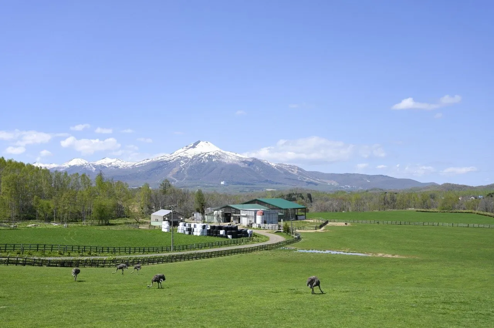
Stay
Lucent NISEKO
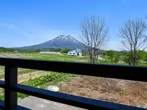
Lucent Niseko
コテージ クルージング
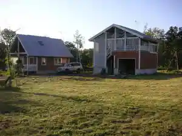
Koteeji Kuruujingu
プチコテージルート６６ニセコ
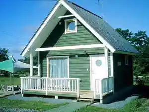
Puchikoteejiruuto 6 6 Niseko
Niseko にくやどや
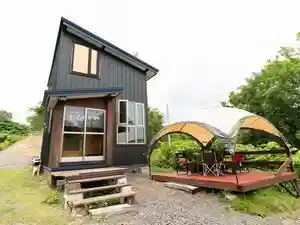
Niseko Nikuyadoya
SOSHIZI
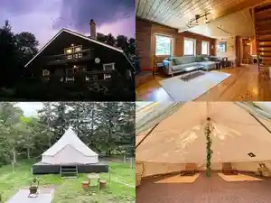
Soshizi
Niseko Forest Villa
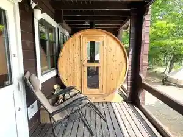
Niseko Forest Villa
ペンション ルポーゼ
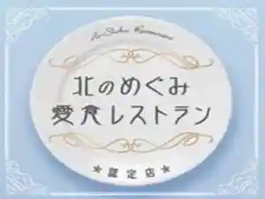
Penshon Rupooze
東山ニセコビレッジ・リッツカールトン・リザーブ
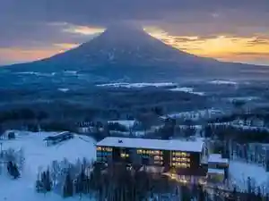
Higashiyama Nisekobirejji Rittsukaaruton Rizaabu
ペンシオーネ ウーノ
Penshioone Uuno
Wonder Lodge Niseko
Wonder Lodge Niseko
SANU 2nd Home ニセコ1st
Sanu 2Nd Home Niseko 1St
スノードッグビレッジ
Sunoodoggubirejji
Dining
タージ・マハール ニセコアンヌプリ店
Taaji Mahaaru Nisekoannupuri Mise
ニセコ高橋牧場レストラン PRATIVO
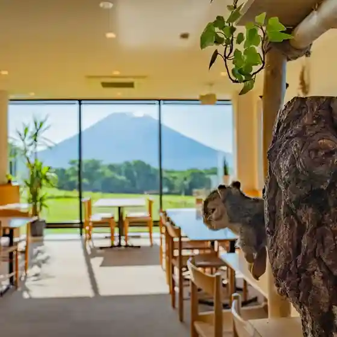
Niseko Takahashi Bokujou Resutoran Prativo
ニセコ昔とうもろこし市場
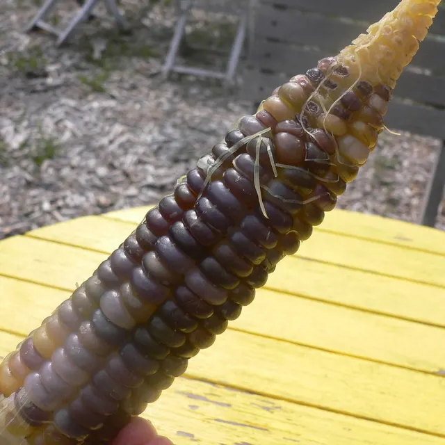
Niseko Mukashi Toumorokoshi Shijou
そば処おおはし
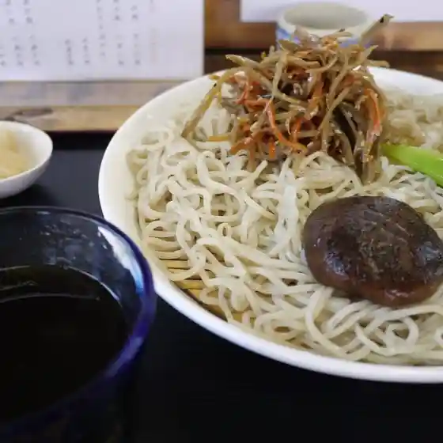
Soba Tokoro Oohashi
レストハウス

Resutohausu
ソウガ デ ミーナ
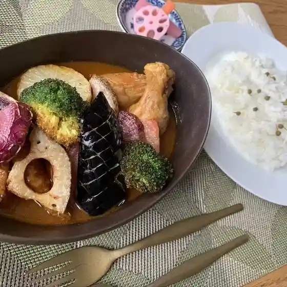
Souga De Miina
ラファエル
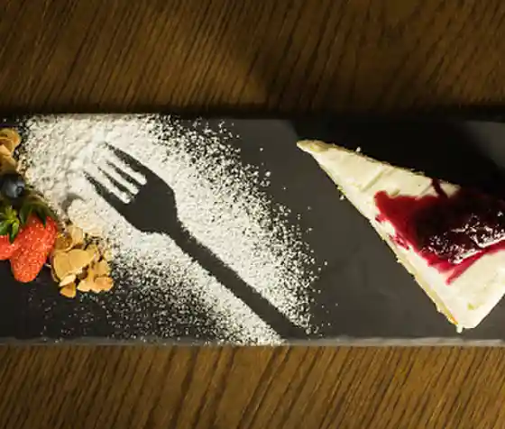
Rafaeru
ザ シガー バー

Za Shigaa Baa
コットンファーム
Kottonfaamu
ニセコ山麓パーラー
Niseko Sanroku Paaraa
バーベキューハウス 木々亭
Baabekyuuhausu Kigi Tei
くいしんぼう 福
Kuishinbou Fuku
いこいの湯宿 いろは
Ikoino Yuyado Iroha
奥土農場
Okudo Noujou
M's cafe
M'S Cafe
やん衆天
Yan Shuu Ten
レストラン 五色
Resutoran Goshiki
スイーツ＆カフェ ビレッジパティスリー
Suiitsu & Kafe Birejjipateisurii
中華点心 籠堂
Chuuka Tenshin Kago Dou
Upashi Seta
Upashi Seta
バーチツリーカフェ
Baachitsuriikafe
Ichiseko rockon
Ichiseko Rockon
唐火七
Tou Hi Shichi
肉村 ニセコ店
Niku Mura Niseko Mise
Sights
Dai 2 Ari Shima Dacho Ranch
Dai 2 Ari Shima Dacho Ranch
Niseko Annupuri 1000M Daichi Tembo Plaza
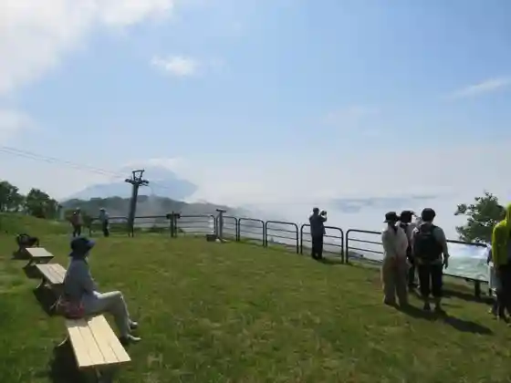
Niseko Annupuri 1000M Daichi Tembo Plaza
Ari Shima Memorial Museum
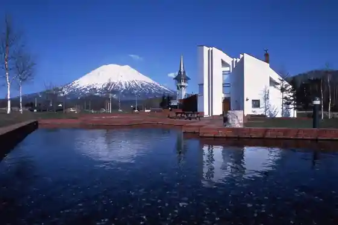
Ari Shima Memorial Museum